- Part 1: Choosing between models [post]
- Part 2: Separating signal from noise [post]
- Part 3: Choosing a loss function [post]
- Part 4: Splitting the data [post]
- Part 5: Choosing model candidates [post]
- [slides] [code]
Choosing between models
Let’s fit a model to some data. These are the annual temperatures for the last 120 years in a fictional Midwestern town. There’s one point per year, the annual median of the daily high temperatures. When we look at it, our eye is really good at pulling out a pattern. There’s a clear lift toward the right hand side. We would like to capture that in a model.
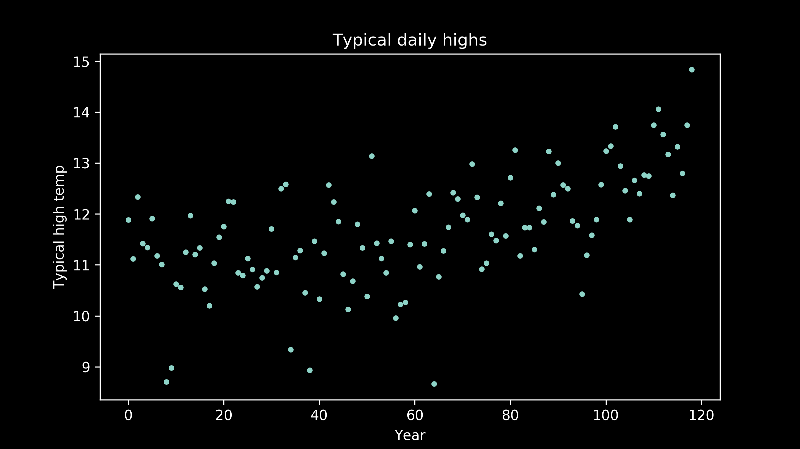There are a lot of models that can represent this. A really nice starting point, because it so simple, is a straight line. Here’s what the best fit straight line looks like. It does a pretty good job. We can see that it definitely captures the upward tilt of the data. But it doesn’t capture the bend in it. It’s clear when we examine it, that a straight line doesn’t do quite as well as we would like.

Luckily, we have a lot of other options. A reasonable next candidate is a quadratic, a polynomial with a squared term instead of just a linear term. These have curvature to them. We can see that the best fit quadratic clearly captures the lift at the right hand side of the plot and the bend in the middle, but it also imposes a little lift on the left-hand side of the plot which is not obviously reflected in the data.
So, we can try other options. We can try polynomials with cubic terms, powers of three.
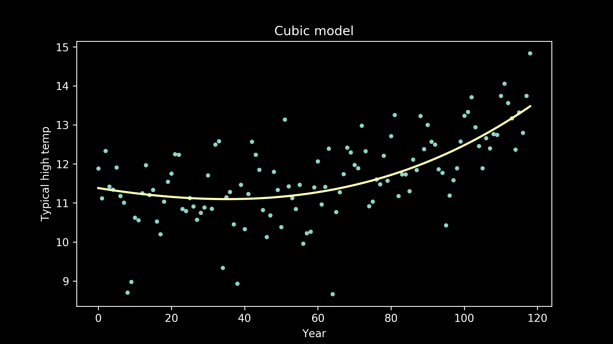Or we can look at a polynomial with quartic terms, powers of four.
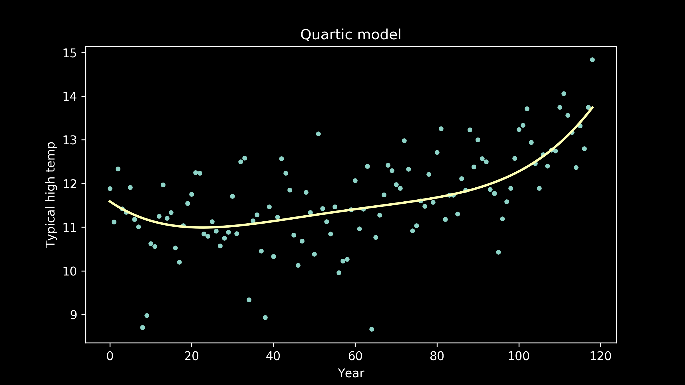We can also fit polynomial models of order five,
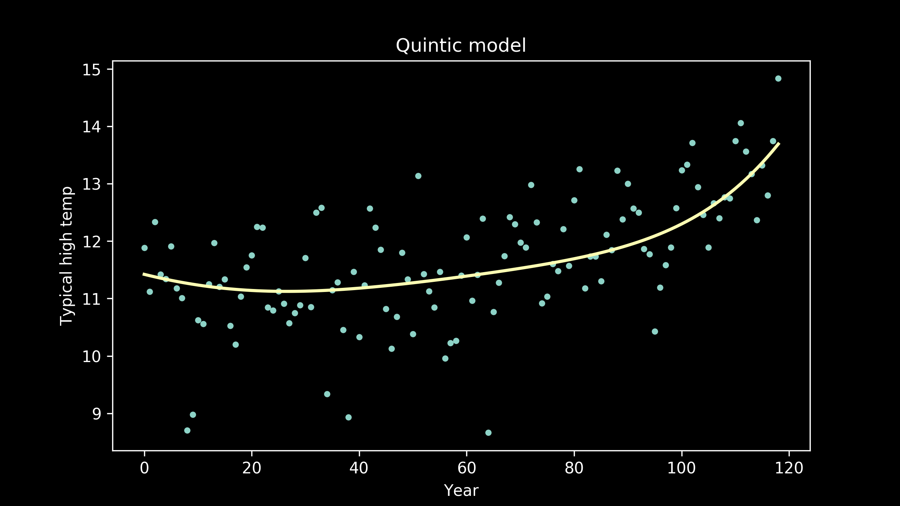polynomials of order six,
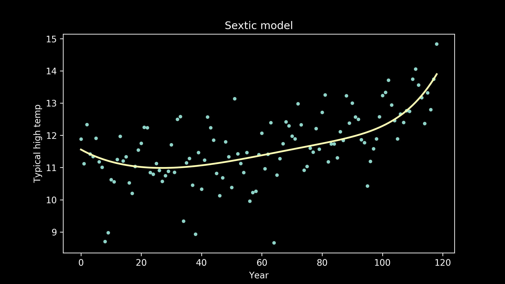seventh order polynomials,
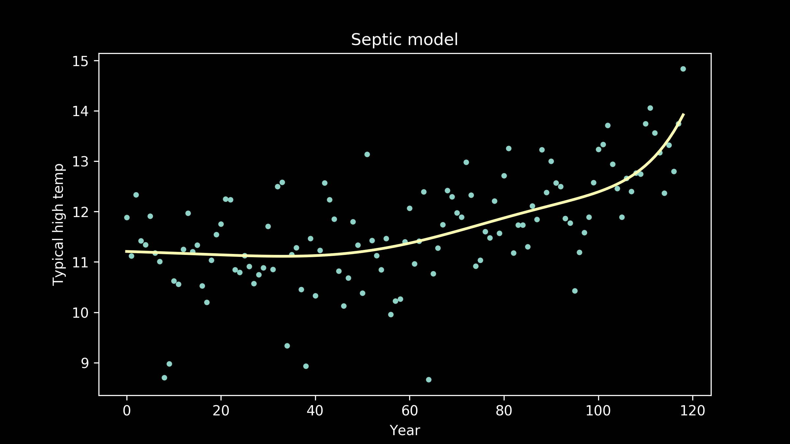and eighth order polynomials, also called octic polynomials (a useful tidbit for filling lulls in conversation at parties).
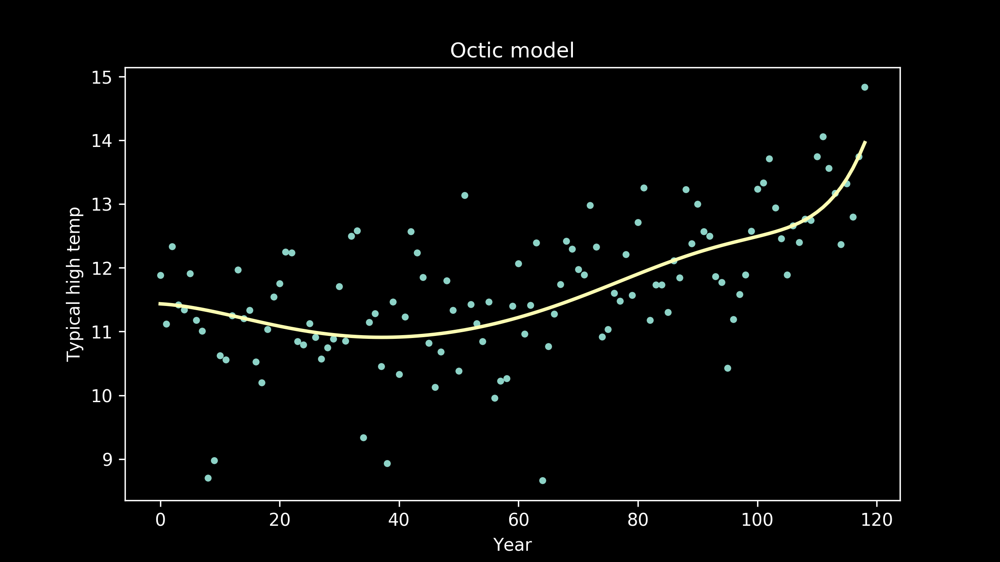Now the fit appears to be getting better, but the line is taking on extra personality. It’s adopting wiggles. If we take this to an extreme, we can imagine a model that passes through every single data point perfectly. This model would have zero error, zero deviation from our measured data. So does that make it the best fit model?

Models are useful because they allow us to generalize from one situation to another. When we use a model, we’re working under the assumption that there is some underlying pattern we want to measure, but it has some error on top of it. The goal of a good model is to look through the error and find the pattern.
The most common way to do this is to split our data into two groups. We can use one group to train our model, and then we can test it to see how closely it fits the second group. The first group is the training data set, in the second group is the testing data set. There are lots of ways to do this, and we will revisit them later, but for now, we will randomly sort our years into two bins. We’ll put 70% of them into our training data set, and 30% of them into our testing data set.
Then, we can go back to our collection of model candidates and try them one by one. Here are a few of the models, trained on the training data, plotted with the testing data.
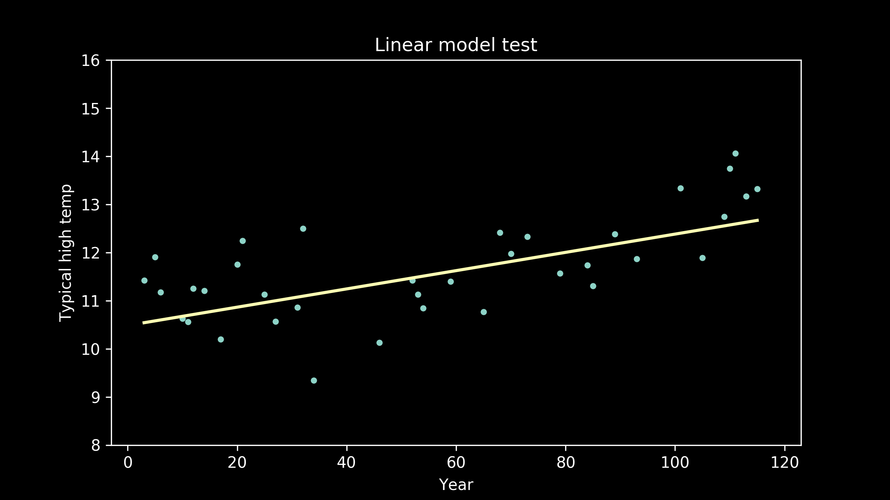 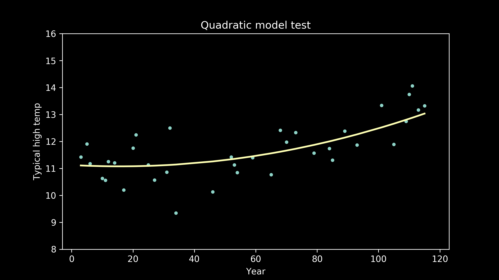 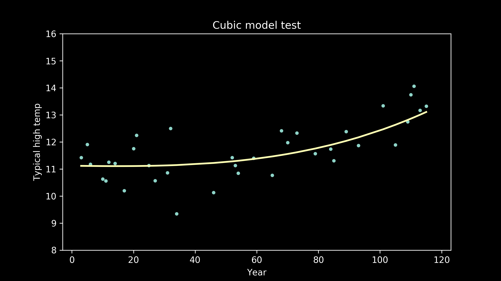 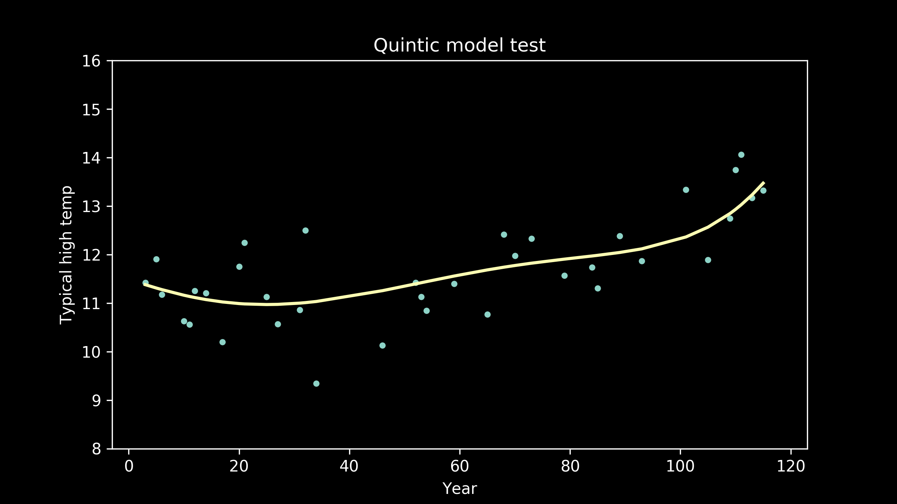 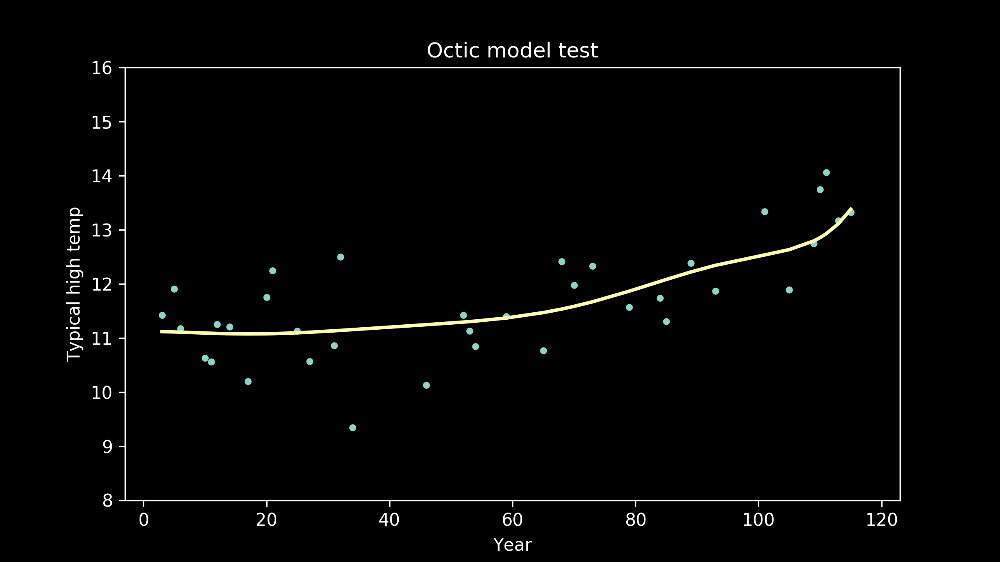As the models get higher order, we can see that the wiggles they have developed may have been helpful for fitting the training data, but don't necessarily help them fit the testing data better. We can see an extreme example of this in the full interpolation model, where we just connect all the training data points with straight lines. It really struggles to match the testing data points
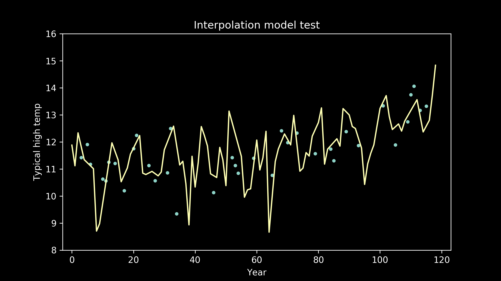It's helpful to look at the error on the training and testing data sets for each model lined up side by side.
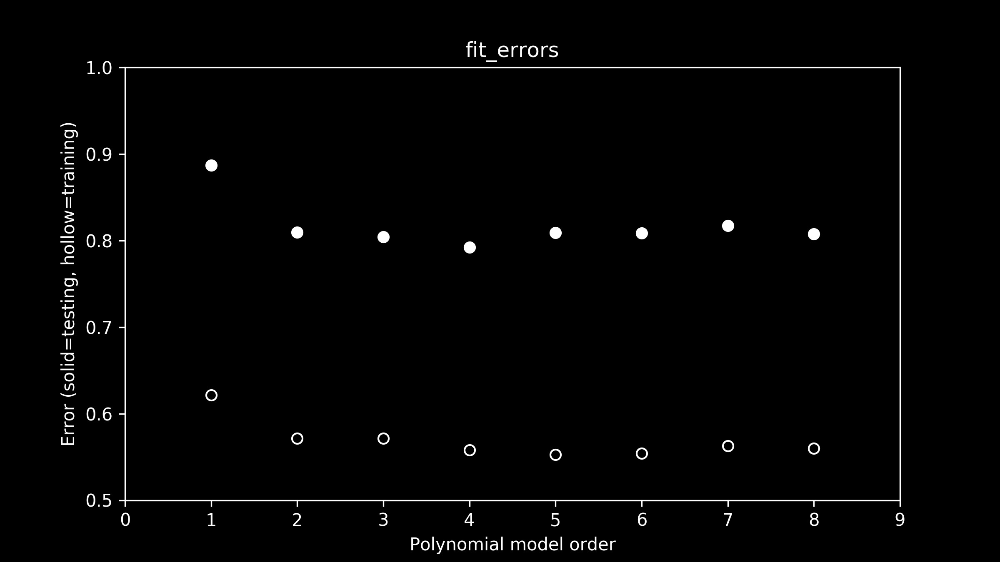Looking at the errors on the training data set, a few things jump right out. First is the wide gap between the training errors (hollow circles) and testing errors (solid circles). Right away we can see that there is a substantial difference between the two data sets.
Second, there is a precipitous drop in error going from a linear to a quadratic model (order-1 to order-2 polynomial). This makes sense. When we were eyeballing it, we could see that the linear fit failed to capture the curvature of that data, one of its most prominent features.
So which model fits best? When we look carefully at the errors on the training data, it appears that the error on the fifth order polynomial model is the lowest. The differences are subtle so you might have to squint. All the higher order models have low error too, but they are just a little higher than an order-5 polynomial. But as we mentioned, that's not the ultimate test. It's the error on the testing data that we really care about.
Careful inspection of testing error shows that the fourth-order model does the best job. At higher orders of polynomials, the error on the test data set goes up. The more wiggly the line gets in fifth-and-higher order polynomial models, the more it captures the quirks of the training data, rather than the underlying pattern of the testing data that we are interested in.
Based on this train-and-test approach we have a clear winner: of all the models we tried, the fourth-order polynomial is best.
Congratulations to us! We chose a pretty good model for our data. But don't leave just yet! There some pretty important ideas still to mention. Join me for part 2 where we'll talk in more depth about what we want in a model.